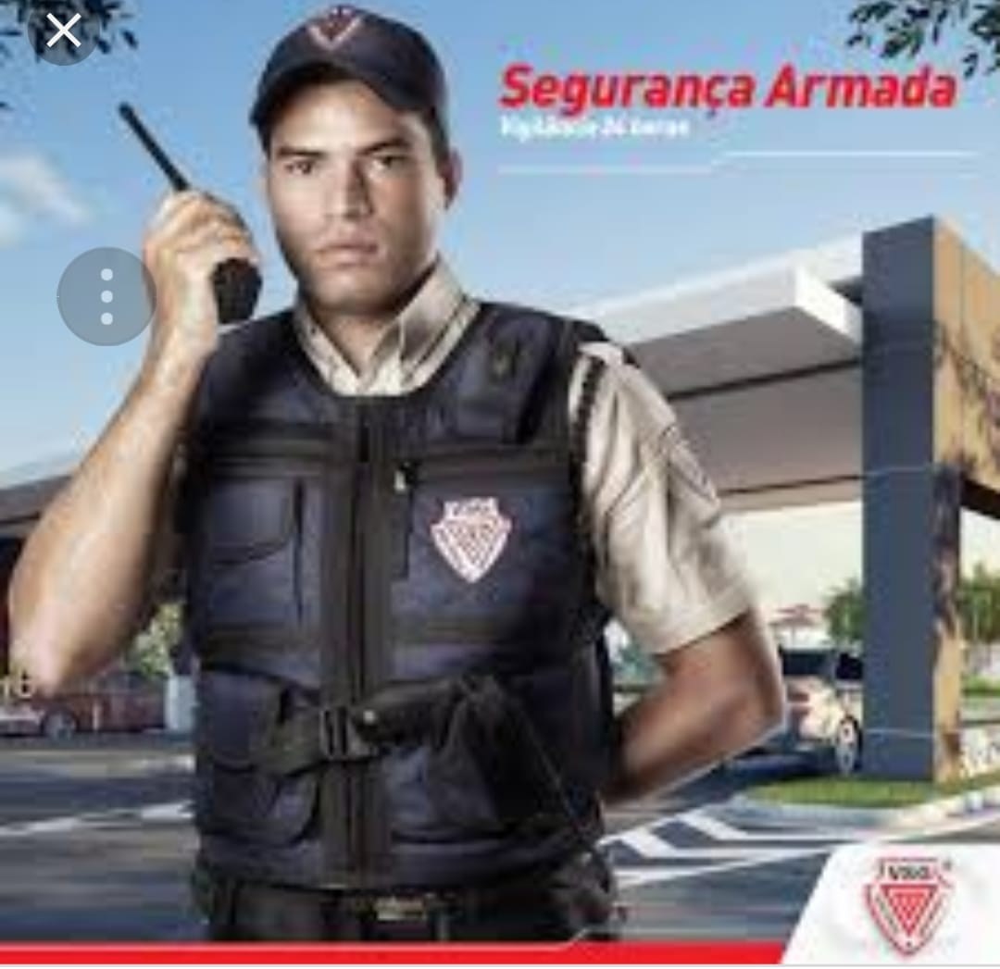

Currículo
Hugo Soares Pinto
Vigilante
Data de nascimento: 26/04/1988 - 36 anos
Endereço: Rua Goiania, 234 - Caiçara, Belo Horizonte, MG
Telefone: (31) 9 8710-6777
Email: hugosoares.dev@gmail.com
FORMAÇÃO ACADÊMICA
- Graduação em Análise de Desenvolvimento de Sistemas - Tecnólogo Universidade Estácio - Data da conclusão: 06/2025
- Ensino médio - E.E Antônio Emgrácio da Silva - Data da conclusão: 12/2014
EXPERIÊNCIA PROFISSIONAL
Cargo: Vigilante Período 11/2011 a 11/2016 Principal atividades: Realizar rondas periódicas para garantir a segurança das instalações. Monitorar câmeras de vigilância e alarmes de segurança. Controle a entrada e saída de pessoas e veículos. Inspecionar crachás e documentos, identificar e relatar situações de risco, como incêndios, vazamentos ou outras emergências. Prevenir furtos e vandalismos nas instalações. Orientar e fornecer informações a visitantes e funcionários. Responder a perguntas e lidar com reclamações.
CURSOS E APRIMORAMENTOS
Curso de Vigilante Patrimonial 25/07/2011 (Ultima Reciclagem 26/07/2024.)
Centro de formação de Vigilantes LTDA. Conteúdo: NOÇÕES DE SEGURANÇA PRIVADA LEGISLAÇÃO APLICADA EM DIREITOS HUMANOS RELAÇÕES HUMANAS NO TRABALHO SISTEMA NACIONAL DE SEGURANCA PÚBLICA E CRIME ORGANIZADO PREVENÇÃO E COMBATE A INCÊNDIOS E PRIMEIROS SOCORROS EDUCAÇÃO FÍSICA DEFESA PESSOAL ARMAMENTO E TIRO VIGILÂNCIA RADIOCOMUNICAÇÔES E ALARMES CRIMINALISTICA E E TÉCNICAS DE ENTREVISTA
MTA - 08 Manutenção de Armas e Munições 20/06/2013
CTPS Conteúdo: Normas de segurança para armas de fogo. Conservação e limpeza de armas de fogo. Componentes das arma de fogo. Escolha de equipamentos e produtos adequados. Procedimentos para armazenar. Desmontagem e montagem de armamento.
C.A.T.I - Low Ligth 24/10/2013
C.A.T.I Conteúdo: Tipos de lanternas; Aplicações de cada equipamento; Fundamentos táticos do LOW LIGHT; Tipos de formação tática em diversos cenários de ocorrência; Apreendendo ver no escuro (O que observar e como observar); Disciplina do som; Explicações científicas do efeito da lanterna bem aplicada, em relação à dilatação das pupilas; Movimentação e aproximação sem ser visto; Onde e como devo usar minha lanterna sem denunciar minha equipe; Truques de lanterna para desestabilizar suspeito; Os dez mandamentos do LOW LIGHT, estudos de caso; Planejamento e execução de missões em baixa luminosidade
C.A.T.I - Imobilizações Táticas 29/06/2013
C.A.T.I Conteúdo: Técnicas avançadas de condução de presos; Domínio das articulações; Técnicas avançadas de desarme; Técnicas de utilização de algemas; Técnicas avançadas de imobilização; Imobilização tática com 1 a 4 operacionais; Equipes e formações táticas de Imobilização; Imobilização de suspeitos sob o efeito de entorpecentes; Imobilização em ambientes confinados (CQB); Como evitar O artigo 129 do Código Penal Brasileiro; Estratégia tática e desarme em situações envolvendo reféns; Estratégia tática D desarme/ arma de fogo, Desarme seguido de imobilização do sequestrador; Retirada imobilização de suspeito em veículos; Simulações de diversas situações; Utilização de jato fluido Imobilizante JFI-50.
HABILIDADES E INFORMAÇÕES
- Cursando Grandes Eventos.
- Ótimo relacionamento interpessoal
- Proativo
- Resolução de problemas
- CNH - B
- Disponibilidade para viagens